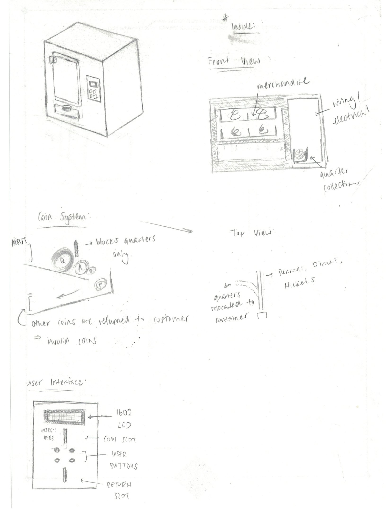
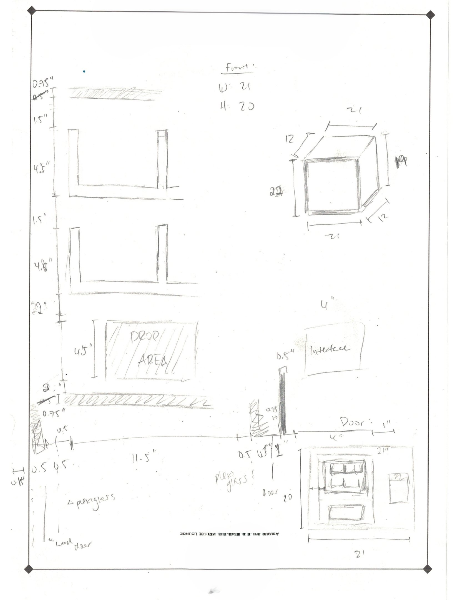
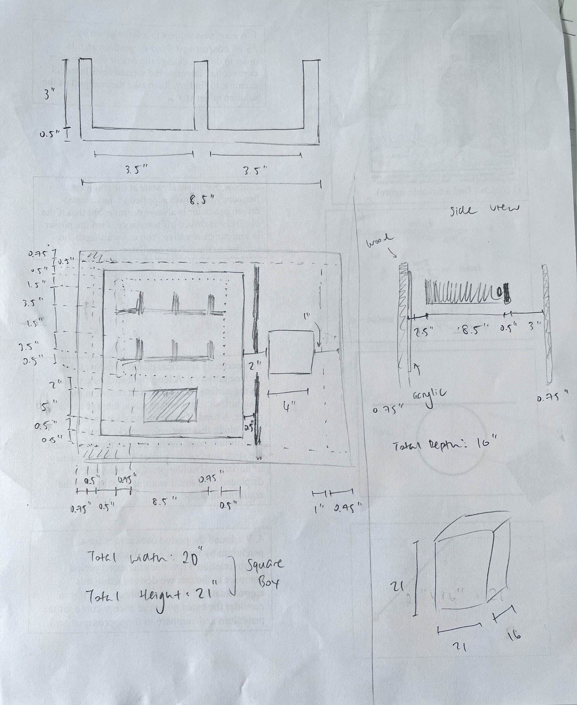
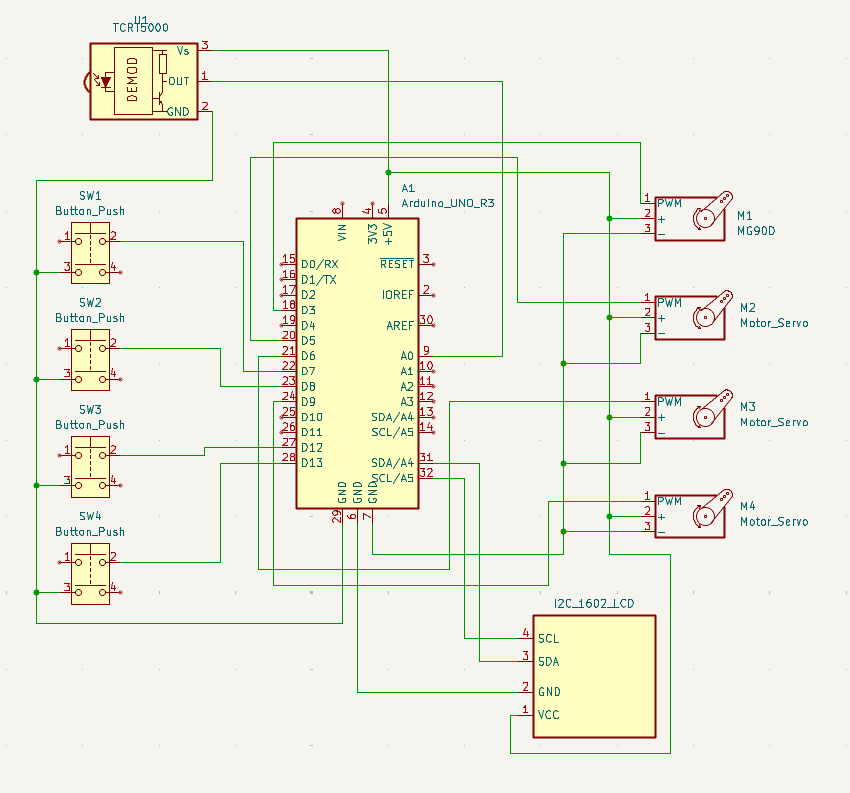

To get more experience with Arduinos and microcontrollers, I started a personal passion project: designing and building a vending machine from scratch. Using an Arduino Uno, various electrical components, plywood, and some tools, I've been developing the entire system -- from the physical structure to the messages displayed on the screen.
This is a work-in-progress, and below is my work so far.



Click on each to view in detail

In Iteration 1, only the IR sensor and LCD is wired up. In the video, I am testing the functionality of the sensor and seeing if it can detect the presence of a coin. Once it does, the counter goes up by $0.25.
Iteration 2 sees the integration of four buttons and a servo motor. Only one button is functional, however, and it simulates the user input aspect of the vending machine. Once the counter reaches the desired amount, $2.00, the motor begins to rotate.
Lastly, in Iteration 3, I have removed unnecessary wiring from the buttons and added in all four motors. Each button represents a different item and they are all wired to their own, distinct servo motor.
View the Arduino code for this project on Github.